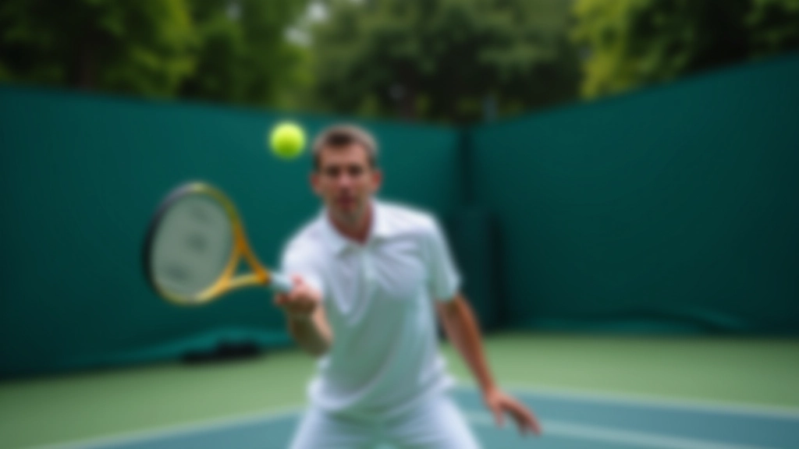

أسئلة شائعة
إجابات مباشرة عن تدريبات الضربة الطائرة والاقتراب من الشبكة

معظم اللاعبين يلاحظون تحسناً واضحاً في التوقيت والحركة خلال 3-4 أسابيع من التدريب المنتظم. لكن الثقة الحقيقية والتحكم بالضربات الصعبة تحتاج إلى 2-3 أشهر من الممارسة المستمرة.
لا. عندنا برامج لكل المستويات. إذا كنت مبتدئاً، نبدأ بأساسيات الحركة والتوازن والقراءة الصحيحة للكرة. لو كنت متقدماً، نركز على التكتيكات المعقدة والسيناريوهات المختلفة في المباراة.
برنامج الأساسيات يركز على الوضعية الصحيحة والتحرك والتوقيت. البرنامج المتقدم يتعمق في استراتيجيات الاقتراب، ضربات الانتقال، قراءة المنافس، والمواقع الهجومية. كل برنامج مصمم ليكون متدرجاً وبناءً على السابق.
أيوه. التدريبات المنافسة مصممة لتكون قريبة جداً من واقع المباراة — ضغط الوقت، سيناريوهات مختلفة، نقاط حرجة. الهدف إنك تتعلم كيفية تطبيق مهارات الشبكة تحت ضغط، وليس في ظروف مثالية.
أفضل شيء يكون معك شريك تدريب لأنه بتقدر تطبق التكتيكات والحركات في ظروف قريبة من المباراة. لكن الأساسيات ممكن تتعلمها وتتمرن عليها بمفردك باستخدام تمارين مع الجدار أو الآلة.
يمكنك التواصل معنا مباشرة وحنساعدك تختار. عندنا استشارة مبدئية لتقييم مستواك والأهداف اللي تبغاها. بناءً على ذلك، نوصيك بالبرنامج اللي يناسبك.
ما زال عندك أسئلة؟
تواصل معنا مباشرة وحنساعدك تختار البرنامج المناسب ونجيب على أي استفسار.
ابدأ الآن